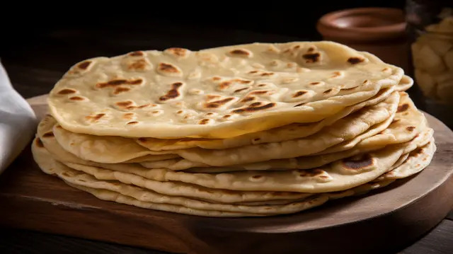

Roti Recipe

Ingredients
- 2 cups whole wheat flour
- 1/2 teaspoon salt
- 3/4 cup water (approximately)
- 1-2 teaspoons oil or ghee (optional)
Instructions
- In a large bowl, mix the whole wheat flour and salt. Gradually add water, a little at a time, and knead the dough until it is soft and pliable.
- Cover the dough with a damp cloth and let it rest for 15-30 minutes.
- Divide the dough into small balls of equal size.
- On a floured surface, roll each ball into a thin circle, about 6-8 inches in diameter.
- Heat a tawa or non-stick skillet over medium-high heat. Place the rolled-out dough onto the hot tawa.
- Cook for about 30 seconds, or until you see bubbles forming on the surface. Flip the roti and cook the other side for another 30 seconds.
- Press gently with a clean cloth or spatula to encourage puffing. Flip again and cook for a few more seconds if needed.
- Remove from the skillet and place in a container lined with a cloth to keep warm and soft. Repeat with the remaining dough balls.
- Serve hot with your favorite curry or vegetable dish.